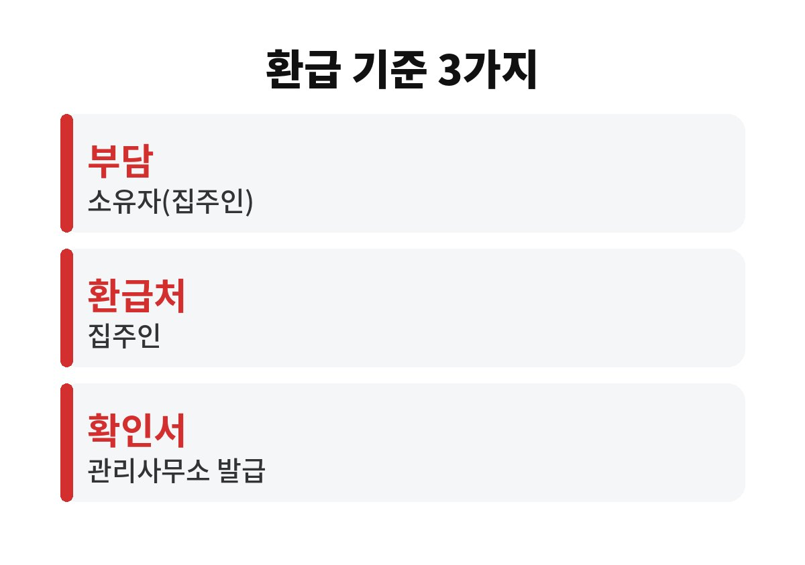
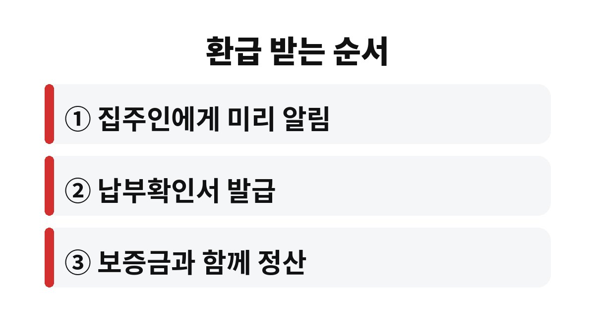

장기수선충당금 환급은 관리사무소가 아니라 집주인에게 받는 돈이고, 세입자는 관리사무소에서 납부확인서만 발급받으면 된다.
공동주택관리법 시행령은 이 돈을 소유자가 부담하도록 정해 두었고, 사용자가 대신 냈다면 소유자가 돌려주도록 했다.
매달 관리비에 섞여 나가다 보니 이사 날 보증금만 받고 그냥 나오는 경우가 많다.
장기수선충당금은 엘리베이터, 외벽, 배관처럼 아파트의 큰 시설을 고칠 때 쓰려고 모아 두는 돈이다.
고친 시설의 가치는 집을 가진 사람에게 남기 때문에 부담도 소유자 몫이다.
그런데 관리비 고지서는 실제로 사는 사람에게 나오므로 세입자가 매달 함께 내게 된다.
그래서 계약이 끝날 때 그동안 낸 금액을 집주인에게 돌려받는 구조다.
관리사무소는 돈을 돌려주는 곳이 아니다.
세입자가 요구하면 납부확인서를 발급해 주는 역할을 한다.
확인서에는 보통 부과 기간과 월별 금액, 합계가 적혀 있다.
이 합계가 집주인에게 청구할 금액의 근거가 된다.
관리비를 자동이체로 냈다면 은행 출금 내역도 함께 남겨 두면 금액을 맞춰 볼 때 편하다.
고지서에는 비슷해 보이는 항목이 여러 개라서 이름부터 확인한다.
수선유지비는 장기수선충당금과 이름이 비슷하지만 일상적인 보수에 쓰는 돈이라 사는 사람이 부담한다.
고지서 한 장을 펼쳐 놓고 장기수선충당금 칸의 이번 달 금액을 먼저 찾는다.
그 금액에 거주한 달 수를 곱하면 대략의 환급액이 나오고, 정확한 숫자는 확인서로 맞춘다.
월 금액은 단지와 면적마다 다르고 장기수선계획에 따라 중간에 바뀌기도 한다.
| 항목 | 부담하는 사람 | 이사할 때 |
|---|---|---|
| 장기수선충당금 | 소유자(집주인) | 세입자가 낸 만큼 집주인에게 환급 |
| 수선유지비 | 사용자(세입자) | 환급 대상 아님 |
| 선수관리비 | 매도인·매수인 사이 정산 | 세입자 정산과는 별개 |

장기수선충당금 규정은 공동주택관리법에 따라 관리되는 아파트를 기준으로 한다.
오피스텔이나 관리 방식이 다른 소규모 건물은 고지서에 같은 이름이 있어도 처리 방식이 다를 수 있다.
이런 곳은 관리사무소나 관리인에게 해당 항목이 무엇인지부터 묻는다.

이사 당일은 짐 빼기와 잔금 확인으로 정신이 없다.
확인서는 하루 이틀 전에 받아 두어야 그날 바로 금액을 맞춰 볼 수 있다.
드물게 계약서에 장기수선충당금을 세입자가 부담한다는 특약을 넣은 경우가 있다.
이 특약이 있으면 협의가 필요하므로 계약서 특약란부터 펼쳐 본다.
같은 집에서 계약을 갱신했다면 처음 입주한 날부터 퇴거일까지가 기준이 된다.
갱신 때 이미 한 번 정산받았다면 그 뒤 기간만 받으면 된다.
집주인이 바뀐 경우에도 현재 소유자에게 청구하는 것이 일반적이지만, 금액이 크면 법률 상담으로 확인하는 편이 안전하다.
어떤 집주인은 장기수선충당금만큼을 매달 세입자에게 따로 보내 주기도 한다.
이 경우 이사 때 다시 받을 돈이 없으니 입금 내역과 확인서 금액을 비교해 겹치지 않게 한다.
이사 날짜가 잡혔다면 오늘 할 일은 관리사무소에 납부확인서를 신청하는 것 하나다.
집주인과 금액이 맞지 않으면 관리사무소의 부과 내역을 함께 보며 맞춰 보면 대부분 정리된다.
참고 자료: 국가법령정보센터 「공동주택관리법 시행령 제31조(장기수선충당금의 적립 등)」(2026년 11월 확인)
※ 2026년 기준 공공기관 안내를 바탕으로 정리한 글이며, 집 구조와 제품에 따라 결과가 다를 수 있어 제품 설명서를 함께 확인하길 바란다.